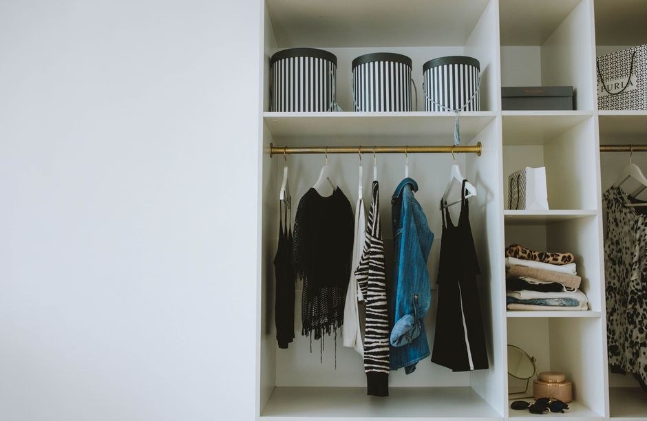

Estrategias para organizar ropa sin ocupar mucho espacio

Photo: Anastasia Shuraeva / Pexels
Guardar la ropa en un espacio pequeño consiste sobre todo en clasificar, doblar con inteligencia y aprovechar la altura. Este es un método sencillo.
1. Clasifica
Saca toda la ropa y divídela en tres grupos: conservar, donar o vender, y tirar o arreglar. La ropa que no te has puesto en un año es buena candidata para donar.
2. Guarda por categorías
Agrupa camisetas y tops, pantalones, ropa interior y accesorios. Coloca lo que usas a diario a la altura de los ojos y las manos, y el resto más arriba o más abajo.
3. Dobla en vertical
Dobla la ropa en rectángulos pequeños y guárdala de pie en los cajones, como si fueran archivos. Lo ves todo de un vistazo y ganas espacio.
4. Usa perchas adecuadas
Las perchas finas ocupan menos. Reserva las anchas o acolchadas para abrigos y chaquetas pesadas. Dobla los jerséis en lugar de colgarlos para que no se deformen.
5. Aprovecha los espacios sin usar
- debajo de la cama, en cajas planas con tapa;
- encima de la barra, en una balda;
- detrás de la puerta, con un organizador de ganchos.
6. Guarda la ropa de temporada
Mete la ropa fuera de temporada en cajas cerradas y lávala antes. El cedro o la lavanda ayudan a alejar las polillas. Evita las bolas de naftalina: sus vapores irritan y son tóxicos si se tragan, sobre todo para niños y mascotas.
7. Revisa con regularidad
Dos veces al año, al cambiar de estación, reordena y retira lo que ya no te pones.
Clasificando, doblando en vertical y aprovechando la altura, un armario pequeño suele bastar para toda tu ropa.